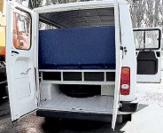

|
Þirketin, iki yýldýr süren tasarým ve geliþtirme çalýþmalarý
sonucunda Peugeot J9 modelini tamamen yenileyerek, Peugeot
J9 Premier modelini piyasaya sundu. Yýlda 1,500 adet ihracatla
birlikte 5,000 adet üretimi hedeflenen Peugeot J9 Premier'in
tanýtýmý 16-17-18 Haziran 2005 tarihlerinde Ýstanbul Tüyap'ta
gerçekleþen OTOBÜS
2005, 1.Otobüs, Minibüs, Midibüs, Aksesuarlarý ve Yan
Sanayileri Fuarý'nda yapýldý.
Tasarým, geliþtirme ve imalatý Karsan ve çözüm ortaklarý tarafýndan
tamamen yerli olarak gerçekleþtirilen J9 Premier, Türkiye
pazarýnýn ihtiyaçlarý doðrultusunda yenilendi;
Araçta
yapýlan büyük deðiþim özellikle ön ve arka kýsýmda yoðunlaþmýþ
durumda. Yenilenen farlar artýk yuvarlak formlu tasarlanmýþ.
Plastik malzemeden imal edilen gri renkli, üç parçalý tampon
ve yeniden tasarlanan motor kaputu öne çýkýyor. Tampon üzerindeki
sis farlarý ledli park lambalarý standart donanýmda bulunuyor.
J9
Premier'in ön ve arka tasarýmýnýn yaný sýra, gösterge paneli,
konsolu, kumanda birimleri, direksiyonu, motoru ve vites kutusu
da yeni.
Modern
bir görünüme kavuþan arka kýsýmda selefindeki çift kapýlý
tasarým yerini sabit tek parçalý bagaj kapaðýna býrakmýþ.
Stop grubu tamamen yenilenirken saydam lens özelliðiyle trafikte
güvenlik artýrýlmýþ.
Yan
tasarýmdaysa jant kapaklarý, yan sinyaller, camlar yenilenmiþ.
Dýþarýya doðru geniþleyen çamurluklar, gövde ile ayný seviyede
bulunan yakýt deposu kapaðý, daha kolay park edebilme imkaný
saðlayan yeni tip dýþ dikiz aynalarý ve tavanda iyileþtirilmiþ
yaðmur oluklarý J9 Premier'in yan tasarýmýnda dikkat çeken
diðer yeniliklerden bir kaçý.
Yeni
J9'un donaným listesinde artýk otomatik açýlabilen, elektrik
motorlu/elektronik kontrollü çift kanatlý bir kapý sistemi
de bulunuyor. Tüm tahrik ve kontrol ünitesi kapý giriþinde
araç tavanýna yerleþtirilmiþ bu sistem, sürücü tarafýndan
torpidodaki bir butonla kontrol edilebiliyor ve herhangi bir
sýkýþma durumunda elektrik motorunu otomatik olarak durdurup
geri hareket yaparak yolcu güvenliðini saðlýyor.
Sistemde,
insan sesli veya melodili uyarý özelliði de bulunmakta. Ayrýca
gerektiðinde tavandaki bir mekanik kol ile acil durumlarda
kapýnýn yolcular tarafýndan manuel olarak açýlmasý da saðlanabiliyor.
Yenilik
operasyonuyla birlikte J9'da ABS ve EBD sistemi standart olarak
sunulmaya baþlanmýþ. Eklenen çekiþ kontrol sistemiyle de yokuþlarda
patinajsýz kalkýþlara imkan verilmiþ.
J9
Premier, ticari araç kullanýcýlarý arasýnda '1 milyon km problemsiz
motor' olarak bilinen 2.8 lt direkt enjeksiyonlu ISUSU motorunun
yanýnda güvenliði öne çýkaran ABS, EBD, ASR sistemleri ile
standart olarak donatýlmýþtýr.
Karsan
Genel Müdürü Mehmet Can Karabað, yeni J9 Premier ile ilgili
yaptýðý açýklamada "J9 Premier'i 40 yýllýk üretim tecrübemiz
sonucunda, Türkiye pazarýnýn ihtiyaçlarýna göre, kendi mühendisimiz,
kendi tasarýmcýmýz ile hayata geçirdiðimiz için çok gururluyuz.
Ýnanýyoruz ki J9 Premier pazardan çok olumlu tepki alacak.
Hedefimiz yýlda bin 500 adetlik ihracatla birlikte senede
5 bin adet J9 Premier üretmek" dedi.
|
|
|
 |
|
Yukarýda,
aracýn eski tasarýmýný gösteren Peugeot J9'a ait resimler
bulunmaktadýr.
|
Karsan
Hakkýnda:
1966 yýlýnda kurulan Karsan Otomotiv, 1981 yýlýndan bu yana
Peugeot lisansý ile ticari araç üretiyor. Halen Peugeot Partner,
Peugeot J9 imalatýný yapan Karsan ayrýca, 2003 yýlýndan itibaren
uygulamaya baþladýðý fason üretim modeliyle Tofaþ, Fiat, Renault
Trucks, Renault, Ford, Toyota gibi markalara da direkt olarak
veya yan sanayileri kanalý ile çeþitli teknik hizmetler veriyor.
Karsan, ÝSO'nun 2003 yýlýnda yaptýðý araþtýrmaya göre, "Türkiye'nin
en büyük 500 Sanayi Kuruluþu" sýralamasýnda 148. sýrada
yer alýyor. 831 kiþinin çalýþtýðý Karsan'ýn hisseleri ÝMKB'de
iþlem görüyor. Karsan, 2004 yýlýnda 17 bin araç sattý ve 281
Milyon ABD Dolar ciro elde etti.
Daha
fazla bilgi için:
|